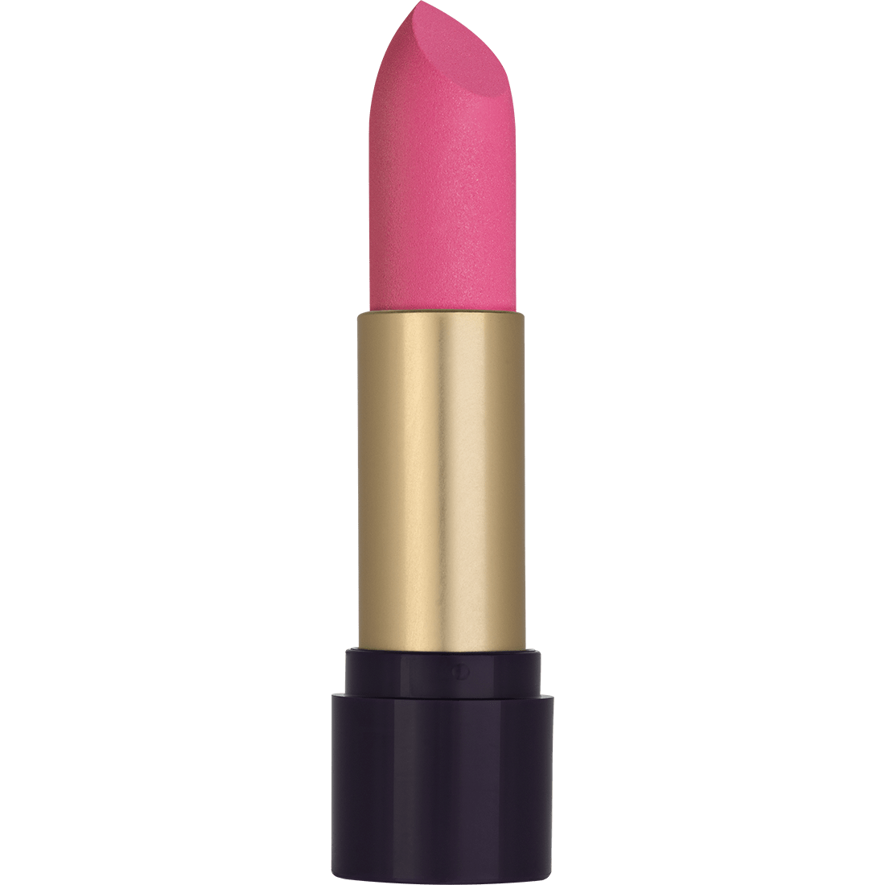

A escolha do batom deve compor a maquiagem dos olhos, ou seja, se a maquiagem dos olhos destacar muito o olhar, a cor do batom deve ser mais discreta, aproximando com a cor natural do lábio. Já se a maquiagem dos olhos for sutil, pode-se aplicar uma cor que destaque mais os lábios. Pode-se também usar um lápis delineador nos lábios antes de passar o batom, para facilitar a sua aplicação e aumentar a durabilidade, ou ressaltar o contorno dos lábios. POde combiná-lo com algum batom matte, gloss, ou brilho labial.
